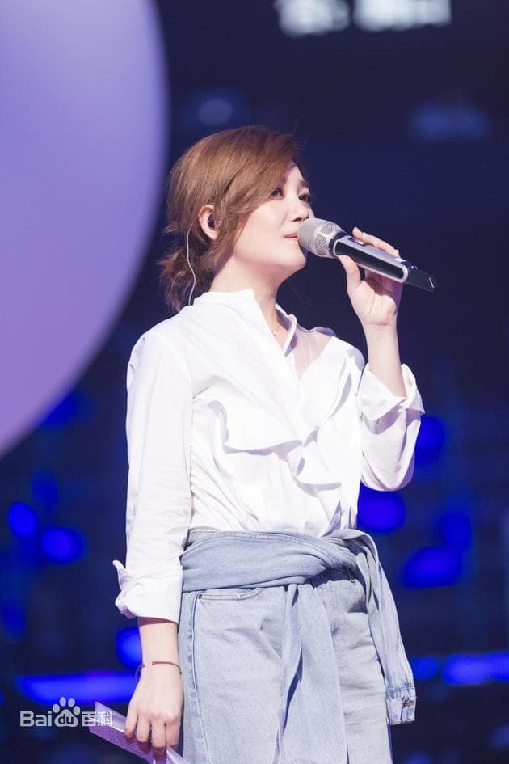
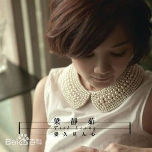
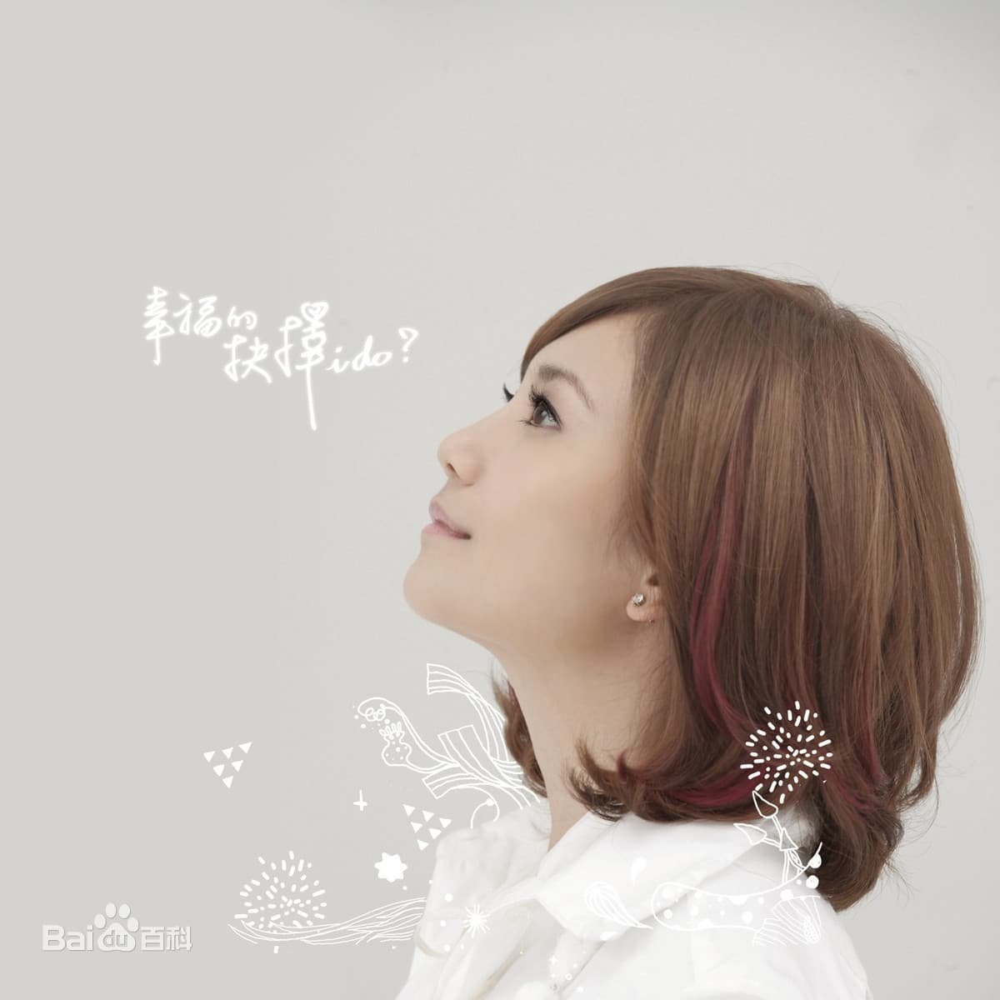
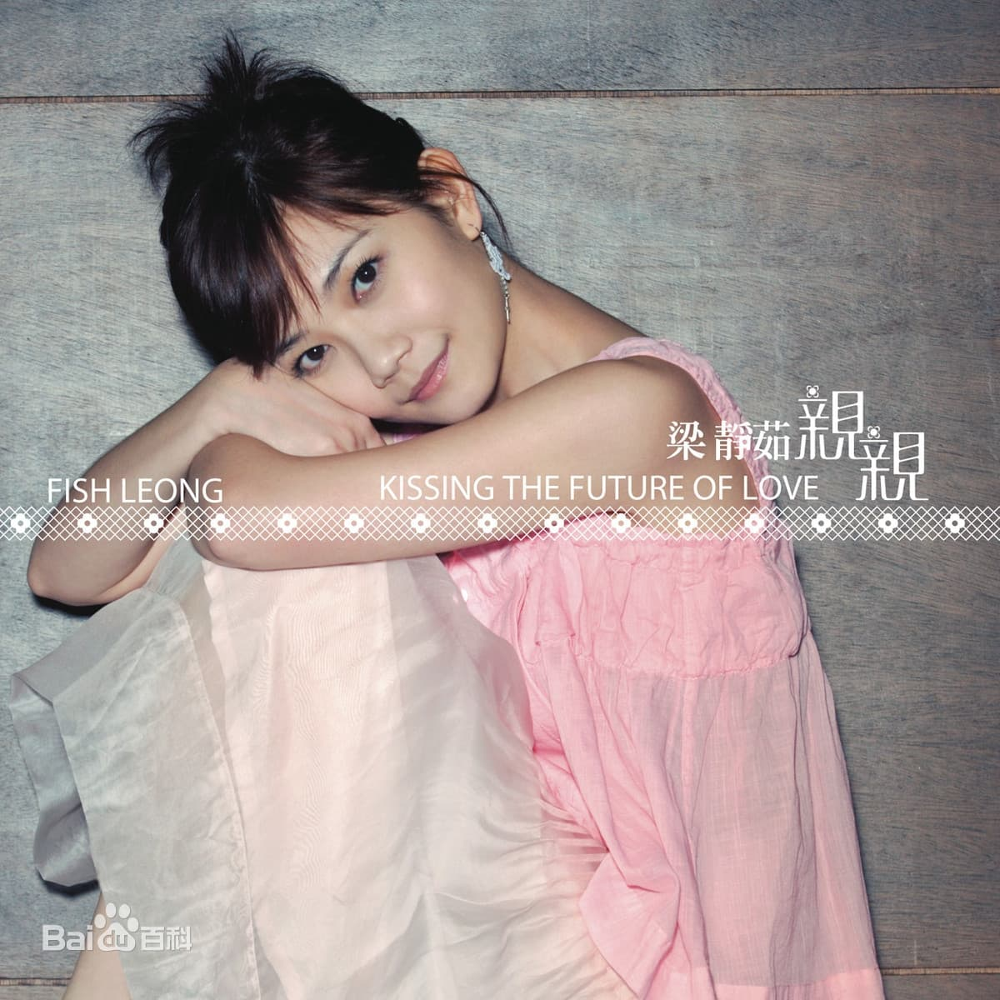

梁静茹（Fish Leong），本名梁翠萍，1978年6月16日出生于马来西亚森美兰州瓜拉庇劳县，祖籍中国广东省佛山市顺德区，华语流行乐女歌手。
梁静茹出生于马来西亚森美兰州瓜拉庇劳县，小时候父亲给她报名参加了很多次歌唱比赛，经过父亲的栽培，她对唱歌便有了兴趣。梁静茹几乎是在竞争中长大的，无论是歌唱比赛，还是书法大赛，她都有过参赛经验，不仅代表学校参加校际挥春比赛，还在多项KARAOKE、校际歌唱比赛中获得了冠、亚、季军，并获得了全森美兰州书法比赛中楷亚军。
1996年，梁静茹与两个同学参加了第2届马来西亚海螺新韵奖民歌创作比赛，从初赛一路晋级到决赛，最终梁静茹与同学获得了青螺组（中学组）第三名，也因为此份殊荣，于是在马来西亚滚石发行的合辑《第二届海螺LEE COOPER纪念专辑》中初试啼声。之后，马来西亚的老板将该合辑的CD拿给李宗盛听，并推荐其中一些未正式出道的歌手，看看李宗盛有没有兴趣；而当时梁静茹并没有被列入推荐的名单之中，但李宗盛听到了梁静茹的声音，便开始对其感到有兴趣，认为她可以来试试看，于是便约了梁静茹在新加坡试唱。
2015年1月4日，为电视剧《只因单身在一起》演唱的主题曲《在爱里等你》正式上线 ；6月26日，推出个人翻唱单曲《温柔》，收录于五月天概念专辑《女也herstory with Mayday》中 ；9月，推出个人单曲《可以的话》，该歌曲亦是电视剧《隐形的翅膀》的片尾曲 ；10月5日，参加在上海举行的简单音乐节 ；11月25日，获得世界杰出名人榜荣誉楷模奖 ；同年，举行“你的名字是爱情”世界巡回演唱会 ；此外，她还获得了马来西亚娱协奖最佳演绎歌手奖，而歌曲《爱久见人心》则获得了10大原创歌曲奖（国际组）及最佳原创金曲奖。
2016年1月9日，推出与范玮琪合唱的歌曲《最好的安排》，收录于范玮琪个人专辑《范范的感恩节》中 ；7月29日，推出个人数位单曲《不翼而飞》，该歌曲亦是电视剧《隐形的翅膀》的主题曲 ；10月9日，其演唱的歌曲《呵护》正式上线 。
2017年1月，参加山东卫视春节联欢晚会 ；7月6日，为电影《秘果》演唱的同名主题曲《秘果》正式上线 ；9月29日，推出个人单曲《两难》，该歌曲亦是电视剧《我和我的四个男人》的片头曲 ；12月，以神秘导师的身份参加浙江卫视励志音乐竞技真人秀节目《梦想的声音第二季》 ；12月31日，参加浙江卫视“领跑2018”跨年演唱会 。2018年7月，作为“想唱大来宾”参加湖南卫视音乐互动类节目《我想和你唱第三季》 ；同年，在美国加州举行了2场个人音乐会；此外，她演唱的歌曲《秘果》及与范玮琪合唱的歌曲《最好的安排》还获得了马来西亚娱协奖10大原创歌曲奖（国际组）。
2019年1月6日，为电影《寒单》演唱的主题曲《想都没想过》正式上线；5月16日，推出第13张个人音乐专辑《我好吗？－太阳如常升起》，收录了包括《以你的名字呼喊我》、《我好吗》等在内的10首歌曲，该专辑是她暌违7年后的回归之作，通过借着歌曲诉说出道20年的歌唱生涯心路历程 ；8月30日，获得华人歌曲音乐盛典年度最佳女歌手奖（港台及海外地区），而歌曲则《慢冷》则获得年度金曲奖 ；9月13日，梁静茹参加2019年中央广播电视总台中秋晚会，并演唱歌曲串烧《小手拉大手》、《慢冷》、《勇气》 ；11月4日，“202020当我们谈论爱情-梁静茹世界巡回演唱会”新闻发布会在北京举行，梁静茹宣布，全新巡演将于2020年2月从上海正式开跑 。
2020年5月11日，参与由人民日报客户端、国家人文历史等联合发起的“致敬白衣天使”线上音乐会 。
梁静茹的父亲和母亲都是音乐爱好者，父母是在歌唱比赛上认识的，后来结下了姻缘 。梁静茹是在马来西亚的一个小镇长大的，平时没事的时候她就放风筝、钓鱼 。小时候因为父母的关系，全家都迷邓丽君，参加歌唱比赛也都选她的歌曲 。梁静茹的家境不是很好，父亲在她18岁的时候去世。高中毕业后，她选择了出去工作来赚钱持家，因此没能读上大学 。她19岁去中国台湾，在这之前从未离开过马来西亚的这个小镇，而小镇也让她在内心深处追求简单的生活 。
梁静茹的表哥是马来西亚歌手张智成，表哥初中时在她家住了4年，由于两家人都特别喜爱唱歌，一到晚上冲凉，就轮流在浴室唱歌，家长们唱费玉清、甄妮的歌，表哥唱张国荣、张学友的歌，而梁静茹则捏着嗓子学唱林忆莲和潘美辰的歌 。
2007年，梁静茹在其上海演唱会庆功宴上，通过经纪人介绍认识了红酒商赵元同（Tony）；之后，两人开始交往。2009年6月中旬，梁静茹在马来西亚举办演唱会，赵元同送上价值17万元人民币的钻戒求婚 。2010年2月1日，梁静茹与赵元同在菲律宾长滩岛举办婚礼，证婚人则由李宗盛担任 ；2月19日，在马来西亚举办婚礼；3月3日，在中国台北宴客，而3场婚礼总花费则超过了500万元新台币 。2014年4月18日，梁静茹生下儿子赵奕晨（Anderson） [86-87] 。
2019年9月8日，梁静茹在专辑分享会上承认已经与赵元同离婚，并签完了离婚协议书，但还有些程序没有办完，至此二人结束了长达9年的婚姻 。
2019年12月2日，梁静茹的前夫赵元同在社交网站发文称已与梁静茹签字离婚 。
2020年11月4日，梁静茹方承认新恋情，男友是毕加索国际企业总裁林达光。
| 专辑名称 | 发行时间 |
|---|---|
| 一夜长大 | 1999-09-01 |
| 如果有一天 | 2000-07-31 |
| 勇气 | 2000-08-01 |
| 闪亮的星 | 2001-01-01 |
| Sunrise,我喜欢 | 2002-02-07 |
| 美丽人生 | 2003-02-01 |
| 恋爱的力量 | 2003-11-01 |
| 燕尾蝶 | 2004-09-10 |
| 丝路 | 2005-09-16 |
| 亲亲 | 2006-10-06 |
| 崇拜 | 2007-11-09 |
| 今天情人节 | 2008-08-28 |
| 情歌没有告诉你 | 2010-12-24 |
| 现在开始我爱你 | 2011-02-01 |
| 爱久见人心 | 2012-08-10 |
| 我好吗?-太阳如常升起 | 2019-05-16 |
梁静茹除了当歌手，还参与了许多公益事业，亦是马来西亚世界宣明会爱心大使和创世基金会爱心大使。2005年12月3日，出席“我要上学！MusicRadio音乐之声微笑行动” 。2006年3月8日，作为公益大使出席台湾育幼院院童筹募助学金活动 ；11月5日，担任关岛观光大使 ；12月5日，参加“我要上学！音乐之声”2周年百万爱心演唱会 。2007年3月，为中华育幼机构儿童关怀协会募款活动拍摄了一组平面宣传海报 ；11月，参加“一万本书，一万双翅膀”捐书活动，并捐出了百本儿童图书 。
2008年5月，以个人名义捐款75万元人民币给四川汶川地震灾区 ；随后，以明星志愿者的身份参加“抗震救灾，共铸爱心丰碑”明星志愿者行动 ；与此同时，梁静茹又与品冠、五月天等整个相信音乐公司艺人共同为灾区捐出了50万元人民币，并将所有官网彩信彩铃下载收入捐献给四川震区；7月8日，出席“给爱一个家——思梦儿梦想计画”公益募款记者会，这是她第三度担任育幼机构关怀协会代言人，并现场呼吁大家用行动关怀孤儿，加入便利商店零钱捐款的行列 。
2009年1月22日，参加台湾三立电视台《国光帮帮忙》发起的明星二手商品义卖活动，捐出价值6000元新台币的打歌服 ；8月14日，参加“把爱传出去”赈灾捐款晚会，与五月天、品冠等共同为台风“莫拉克”事件合捐200万元新台币（约合人民币44万元） ；同年，获邀担任台湾“彩虹大使”，并于10月31日在台北举行的第7届同志大游行上演唱《勇气》等多首歌曲 ；11月14日，参加“穿越长三角——绿色出行看世博”环保联合行动，代表主办方宣读了绿色出行倡议书，并被授予了“2010绿色出行之星”的称号 。
2010年4月12日，作为爱心大使出席迪斯尼电影与家扶基金会共同打造的公益特映会 ；5月，参加邓丽君逝世十五周年纪念演唱会，演出收入则全部捐献给青海玉树地震、台湾八八水灾，用于作灾后重建之用 ；同年，参加“爱音乐·翼起来”全国慈善巡演 ；11月8日，担任东莞电信爱心大使，并参加了“爱音乐·翼起来”全国慈善巡演东莞站 ；12月，作为爱心大使出席圣诞节义卖活动，而获得所得则全数捐给儿福联盟 。
2011年6月14日，被委为大马旅游大使，并拍摄了宣传大马旅游的影片 。2012年9月3日，参加“MusicRadio我要上学助学行动”，并担任了爱心大使 ；与此同时，她还与其他艺人共同演唱了活动主题曲《爱X爱》 。2017年8月，通过微博为四川阿坝州九寨沟县地震灾区祈福，并及时捐款支援 。
梁静茹有着平易近人的可爱个性，她在华语歌坛女歌手的地位跟唱功给予了高度肯定 。梁静茹一直是情歌代言人，从早期的《一夜长大》、《勇气》，到中期的《分手快乐》、《无条件为你》，再到《宁夏》、《燕尾蝶》，梁静茹用亲切的笑容和甜美的嗓音诠释着爱情 （网易、《北京青年报》评）。
梁静茹的声音温暖而磁性，每首歌曲都像是在述说一个故事。具有代表性的“梁氏情歌”，像《勇气》《宁夏》《情歌》这样的暖歌能尝到甜蜜浪漫的味道，而《分手快乐》《崇拜》《别再为他流泪》等疗伤歌曲则有失恋后的苦涩。梁静茹被称为治愈系歌手的代表，听她的歌就像是在回味自己的青春，会有很多感触，很容易让人产生共鸣 （《大河报》评）。
梁静茹的音乐以抒情淡雅类为主，同时包含轻快、摇滚等多种音乐元素。她是在用自己的心和内涵去歌唱，有种力量，可以为人们心灵疗伤，可以在平凡中直指人心 。在演绎歌曲《两难》时，梁静茹用细腻的唱腔唱出了对于选择的坚强，她在细节的处理上，唱出了那些说不出的烦恼 （腾讯、《广州日报》评）。
当音乐越来越难做，不得不靠一些风格上的噱头或者说造型上的搏人眼球来吸引注意力时，梁静茹却依然能靠着踏踏实实的一首又一首纯爱情歌占领市场，这和她自身的音乐魅力分不开。在专辑《情歌没有告诉你》中，歌曲都是梁静茹在婚后的心情体现，所以在唱腔方面，曾经的悲苦、隐忍都不再被听见，取而代之的是一种更为甜蜜以及更为坚定的唱腔表现。《情歌没有告诉你》、《我就知道那是爱》、《给还没遇见的你》、《直觉》几首歌都是用偏Band式的编曲，梁静茹的唱腔显得坚定而坚强，充满了励志情歌般的正能量味道；演绎《你会不会》、《不为失恋说抱歉》这样的苦情歌，梁静茹的表现也并不显得悲苦，而是有一种云淡风轻的淡然情绪在歌曲中，以此来溶解歌曲风格给听众带来的悲痛感 （腾讯评）。
从首张个人唱片《一夜长大》，再到《亲亲》，梁静茹凭借多首情歌，稳稳当当地成为“疗伤系情歌歌手”，闯出了自己的一片天地，也是少有的完全凭唱片来打天下的歌手。她的歌，温和而少攻击力，却能攻占听她唱片的人心里最柔软的那块地方。梁静茹不是那种音色和条件都特别优秀的歌手，她的声音有时候甚至有一点沙哑和带一点点撕裂的感觉，不是最优秀的音乐，也不是最优秀的歌词，但她能用她的心和内涵去表述 （《生活新报》评）。